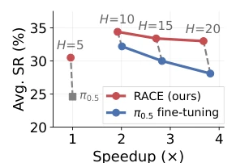
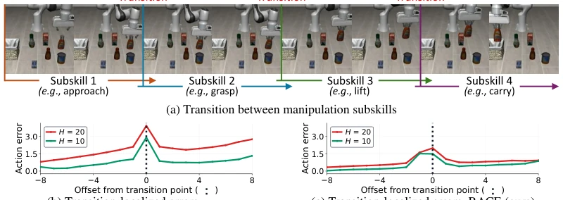
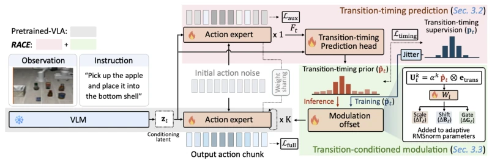
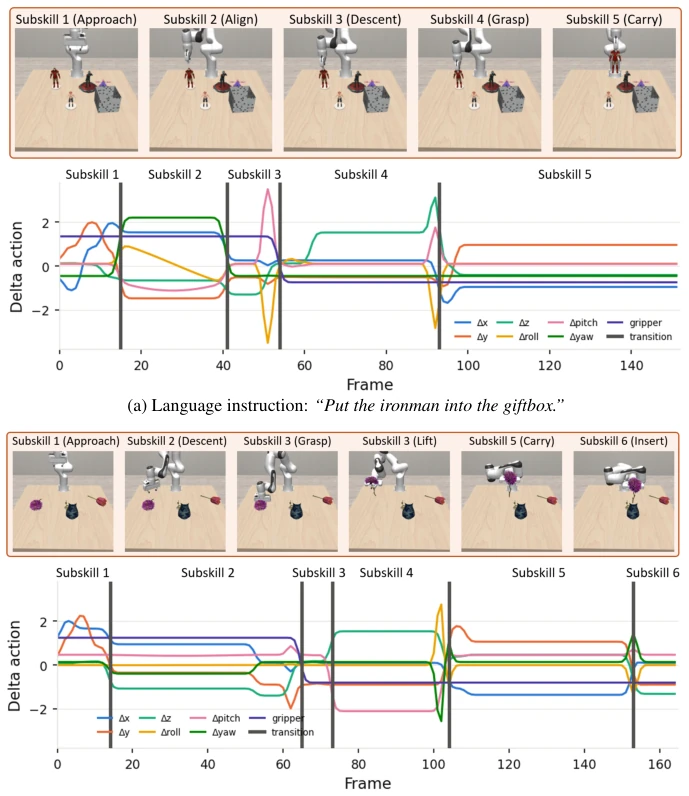
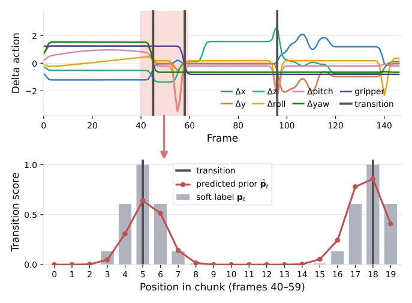
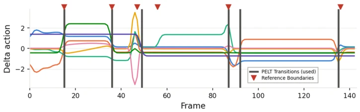

This paper addresses the pain point of VLA deployment: slow inference leads to robots "stop-and-go". The authors did not pursue elaborate architectures, but keenly observed that errors in long action chunks concentrate at "sub-skill switching" points. RACE stabilizes actions by predicting switch timing, which is indeed effective. However, to be honest, this is essentially adding an auxiliary head to existing Flow Matching, amounting to "fine-tuning within fine-tuning". Although real-world performance is promising, it relies on PELT to detect switch points; if demonstration data quality is poor, this approach may fail. Furthermore, while 4x long chunks save time, the cumulative error risk of open-loop prediction remains, and the paper does not detail robustness under extreme conditions.
研究动机Motivation
VLA 模型推理昂贵，导致机器人执行时频繁暂停（stop-and-go）（Black et al., 2025）。虽然 Action Chunking 能减少调用次数，但块越长，预测越远，误差越大（Wang et al., 2026a）。现有方法如 PolicyTrim 需强化学习训练成本高（Wang et al., 2026c），PACE 则截断可靠前缀（Nie et al., 2026）。本文发现长块误差集中在子技能过渡点（如抓取到提升），而非均匀增长。因此，核心问题是如何在长块内可靠预测“何时切换”，而非单纯延长预测 horizon。这比单纯加速推理更关键，因为长块失效往往是因为逻辑断层而非速度。
VLA model inference is computationally expensive, leading to frequent pauses during robot execution (stop-and-go) (Black et al., 2025). Although Action Chunking reduces inference calls, the longer the chunk, the further the prediction, and the larger the error (Wang et al., 2026a). Existing methods such as PolicyTrim require high reinforcement learning training costs (Wang et al., 2026c), while PACE truncates the reliable prefix (Nie et al., 2026). This paper finds that long chunk errors concentrate at sub-skill transition points (e.g., from grasp to lift), rather than growing uniformly. Therefore, the core problem is how to reliably predict "when to switch" within long chunks, rather than simply extending the prediction horizon. This is more critical than simply accelerating inference, because long chunk failure often stems from logical discontinuities rather than speed.
The RACE framework is based on Flow-Matching VLA. The pipeline consists of three steps: 1. Freeze VLM to extract and cache features; 2. Auxiliary one-step denoising (one-step denoising) to obtain action expert hidden states, using a Transition-timing Head to predict the switch timing prior (transition-timing prior); 3. Restart denoising, injecting the prior into each denoising step via token-wise modulation. The innovation lies in: utilizing an auxiliary pass to enable the action expert to perceive future switches (transition-aware), and controlling modulation strength through learnable gates (learnable gates). This is more stable than directly predicting actions, because switch points themselves are discrete signals, making them easier to supervise. Additionally, the gating mechanism allows the model to dynamically adjust its dependence on switch information across different denoising steps; strong dependence in early steps and weak dependence in later steps, which aligns with denoising logic.
Evaluated on simulation benchmarks such as VLABench and RoboCasa-H50. Baselines include π0.5 fine-tuning, ACoT-VLA, and adaptive chunking methods. Metrics include success rate (SR) and inference speedup ratio. RACE outperforms fine-tuning under the same chunk length, surpasses SOTA with 2x long chunks, and remains competitive with 4x long chunks. In real-world grasp tasks, 4x long chunks reduce idle time by 5x and achieve higher success rates. Ablation studies show that adding only an auxiliary pass yields limited improvement; it must be combined with timing supervision and modulation. Error analysis confirms that RACE significantly reduces error spikes near transition points. Additionally, gate value learning results show that early denoising steps exhibit stronger dependence on the switch prior, verifying the rationality of the method design.
其他图片Other Figures

Figure 1: Effect of chunk length H on VLABench, with per-episode inference speedup over π0.5 (Ap- pendix E.2).

Figure 2: Action prediction errors around subskill transitions: (a) an example of transitions between manipulation subskills; (b) action errors spike at the transition point within a chunk, and these spikes grow with the chunk length H; and (c) RACE reduces these error spikes across chunk lengths H.

Figure 3: Overview of RACE. Given an observation and instruction, the frozen VLM extracts fea- tures cached for both passes. RACE predicts a transition-timing prior via an auxiliary one-step denoising pass (Sec. 3.2), then restarts denoising from the same noise, conditioned on it (Sec. 3.3).

Figure 7: Visualization of subskill transitions. Change points detected by PELT (Killick et al., 2012) are overlaid on the action sequences of two VLABench demonstrations, alongside a representative frame for each subskill. Subskill names are generated with Claude Code (Anthropic, 2025) for illustration only; only the transition points are used as labels for policy learning, not the semantics.

Figure 8: An example of transition-timing target and prediction on a held-out VLABench demon- stration (Hexec = 20). Top: standardized action signal and PELT change points; the pink-shaded chunk is enlarged in the bottom plot. Bottom: soft label pt and predicted prior ˆpt in this chunk.

Figure 9: Qualitative comparison between PELT change points and reference subskill boundaries recorded by the VLABench demonstration generator.